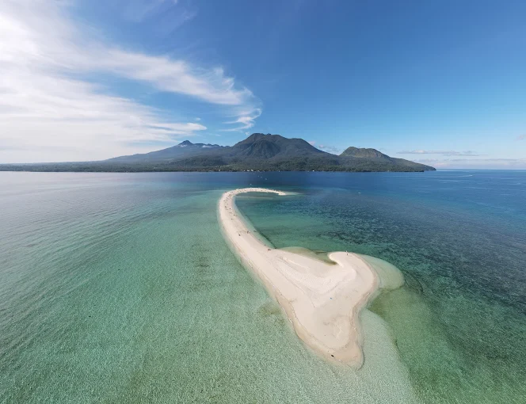
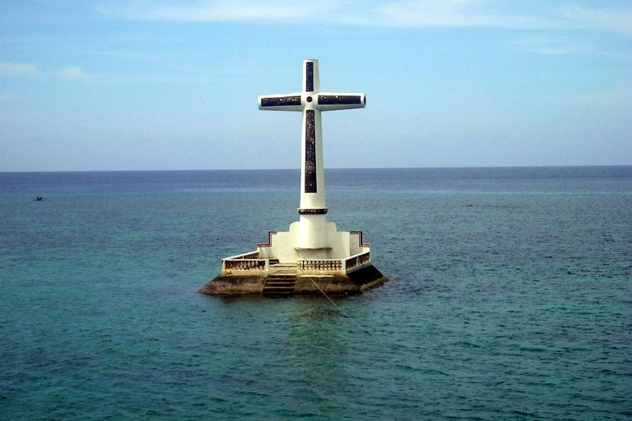
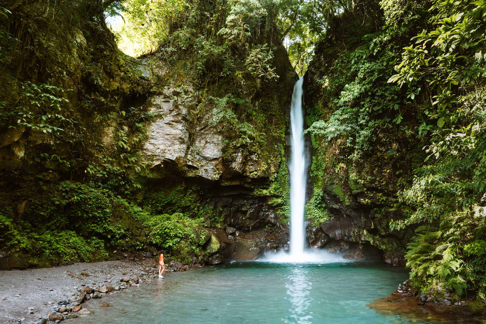
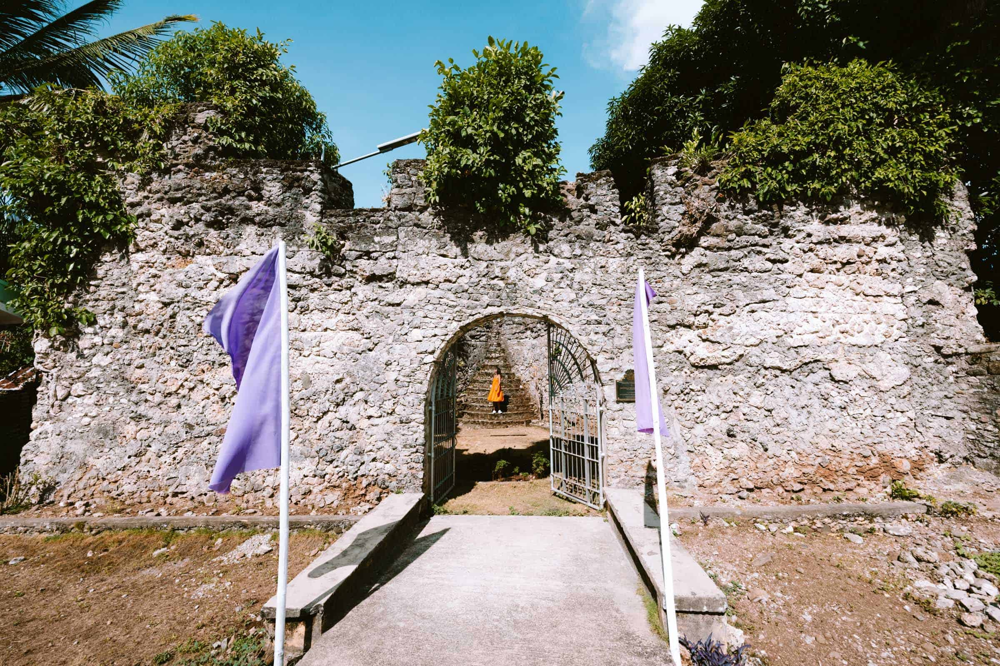
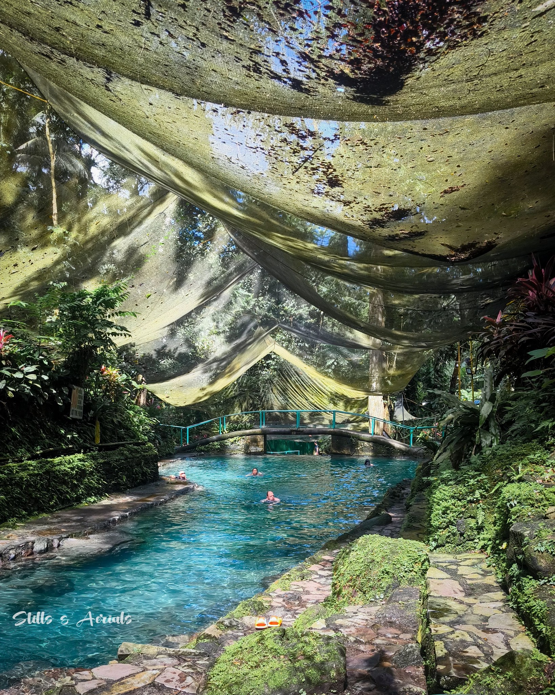
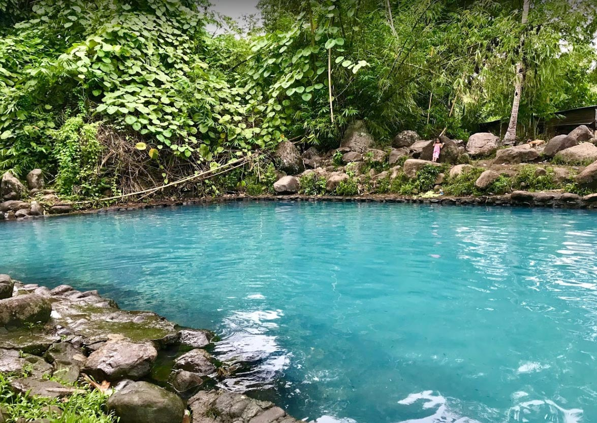

About Camiguin
Located in the northern part of Mindanao, the island province of Camiguin is one of the smallest provinces in the Philippines, with a total land area of about 238 square kilometers. Despite its size, it is famously known as the “Island Born of Fire” because of its volcanic origins, with several volcanoes spread across its lush landscape.
Camiguin is a popular tourist destination known for its natural attractions, including white-sand beaches, hot and cold springs, waterfalls, and rich diving spots. Among its most famous attractions are White Island, a pristine sandbar off the northern coast, and Mantigue Island, known for its vibrant marine biodiversity.
The province is composed of five municipalities. Mambajao, the provincial capital, serves as the main gateway to the island and is the center of commerce and tourism. It is located along the northern coast and is approximately 10 kilometers from Benoni Port, the island's main entry point for travelers arriving by sea from Cagayan de Oro in the neighboring province of Misamis Oriental.
The name “Camiguin” is believed to have been derived from the word “Kamagong,” a type of ebony tree that once thrived on the island, reflecting the province's rich natural heritage.
CHECK OUR TOP DESTINATIONS!












